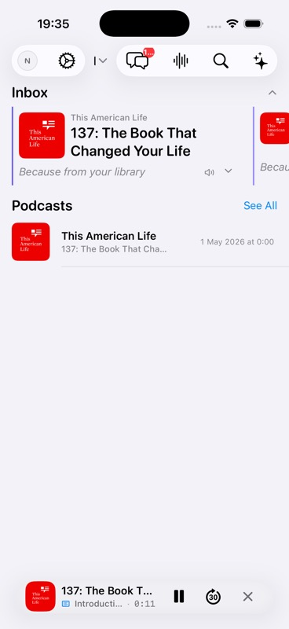
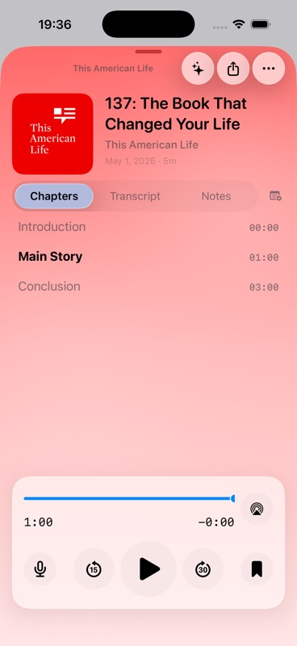

{kind=link}
{kind=link}
Persona, Job, And Acceptance Criteria
Persona: A returning listener trying to continue or control audio quickly. Acceptance criteria are the scenario Given/When/Then plus the declared architecture boundary D7,D8.
Evidence refs: catalog:play-001
Pod0 Validation
Playback - pass_with_issues
| Step | Phase | Action | Expected | Status | Evidence Needed |
|---|---|---|---|---|---|
| step-01-preconditions | Preconditions | Prepare a seeded episode is not playing | Fixture, device, provider, account, cassette, and network state match the scenario setup. | not_run | source_doc, command_output |
| step-02-action | Primary Action | Execute Play is tapped | The user-visible route follows the intended path without hidden state mutation. | not_run | screenshot, ui_tree, log |
| step-03-result | Expected Result | Observe that playback starts, mini-player appears, and elapsed time advances | Observed UI, logs, metrics, and state projections agree with the expected behavior. | not_run | accessibility_audit, command_output, log, metric_trace, screenshot, source_doc, ui_tree |
| step-04-exit | Exit State | Leave the flow through the natural product path | Adjacent screens, back stack, mini-player, account, transcript, agent, or library state remain coherent. | not_run | screenshot, ui_tree |
Declared setup dependencies: UITestSeed audio. Provider mode is none until validation attaches fixtures or cassettes.
| Name | OS | Form Factor | UDID |
|---|---|---|---|
| iPhone 17 | iOS 26.2 | iphone | B4E1F31A-044B-4860-860B-C325BE5CC36E |
No cassettes declared for this scaffold.
Re-run adjacent PLAY-002/PLAY-003 after #718; PLAY-001 can remain pass_with_issues from current start/progress evidence.
| Attempt | Status | Executor | Tools | Commands | Notes |
|---|---|---|---|---|---|
| attempt-001 | pass_with_issues | Codex via XcodeBuildMCP | mcp__xcode.tap, mcp__xcode.snapshot_ui, mcp__xcode.screenshot, mcp__peekaboo.sleep | build_run_sim extraArgs=-skipPackagePluginValidation launchArgs=--UITestSeed | PLAY-001 is proven: playback started, mini-player appeared, and elapsed advanced from 0:06 to 0:23. Adjacent pause/resume validation is blocked by #718. |
PLAY-001 is evidence-backed: tapping Play starts playback, the mini-player appears, and elapsed time advances. Adjacent pause/resume rows remain blocked by #718.



Screenshots and UI-tree excerpts contain seeded public podcast data only. No secrets are exposed.
Required evidence kinds: source_doc, screenshot, ui_tree, log, metric_trace, accessibility_audit
| Kind | Reason | Blocked Dimensions |
|---|---|---|
| resume-fixture | Seeded playback reaches an apparent end state before adjacent pause/resume rows can be validated. | reliability_flakiness, regression_risk |
| accessibility_audit | VoiceOver, Dynamic Type, and contrast were not audited. | accessibility_dynamic_type, touch_ergonomics |
| ID | Type | Path | Description |
|---|---|---|---|
| catalog:play-001 | source_doc | sources/catalog/02-playback-downloads-transcripts-clips.md | Catalog source row for PLAY-001 at line 7. |
| rubric:review-skill-grounding | source_doc | data/skill-grounding.json | Required review skills and skill-search terms for scenario critique. |
| d1-screenshot-episode-detail | screenshot | assets/scenarios/d1-play-pause-resume/20260705T193520Z-episode-detail.jpg | Episode detail before playback with Play and downloaded state. |
| d1-screenshot-mini-player-playing | screenshot | assets/scenarios/d1-play-pause-resume/20260705T193600Z-mini-player-playing.jpg | Mini-player after Play with title, elapsed time, Pause, and skip-forward controls. |
| d1-screenshot-full-player-paused | screenshot | assets/scenarios/d1-play-pause-resume/20260705T193700Z-full-player-paused.jpg | Expanded player at apparent one-minute end state with Play controls. |
| d1-ui-tree | ui_tree | assets/scenarios/d1-play-pause-resume/20260705T193700Z-ui-tree-excerpt.json | XcodeBuildMCP semantic UI-tree excerpts for D1 playback states. |
| pod0-local-run-log | log | assets/scenarios/shared/20260705T193205Z-run-log-references.json | Shared build, runtime, simulator, and command log references for the local evidence run. |
| Area | Status | Summary | Checks | Gaps |
|---|---|---|---|---|
| accessibility | incomplete | Controls expose semantic labels, but VoiceOver/Dynamic Type/contrast were not audited. | semantic labels, target size, Dynamic Type | Formal accessibility audit missing. |
| content_localization | incomplete | Podcast metadata, transcript/agent copy, truncation, empty copy, locale/date/number behavior, and translation safety. Current scaffold has no run evidence for PLAY-001. | copy clarity, long text, dates/numbers/locale, empty/error copy, transcript readability | Attach content localization evidence before scoring this area above 2. |
| controls_gestures | incomplete | Buttons, menus, sheets, gestures, audio route controls, haptics, keyboard alternatives, and touch reach. Current scaffold has no run evidence for PLAY-001. | touch reach, gesture alternative, audio controls, haptic expectation, sheet/menu behavior | Attach controls gestures evidence before scoring this area above 2. |
| observability | incomplete | Structured logs, metric IDs, provider/request IDs, relay IDs, redacted traces, and issue reproduction context. Current scaffold has no run evidence for PLAY-001. | metric IDs, request IDs, relay IDs, redacted traces, issue reproduction context | Attach observability evidence before scoring this area above 2. |
| offline_resume | incomplete | Offline state, app relaunch, background playback, interrupted provider calls, downloads, and resume from stale state. Current scaffold has no run evidence for PLAY-001. | offline messaging, resume after relaunch, background playback, download availability, cancel/retry | Attach offline resume evidence before scoring this area above 2. |
| performance | pass_with_issues | Elapsed labels advanced during playback; no Instruments/audio trace is attached. | elapsed advance, tap result, screen settle | No audio trace; fixture duration mismatch. |
| privacy_security | incomplete | Secrets, private keys, permissions, logs, analytics, relay visibility, cassette redaction, and export safety. Current scaffold has no run evidence for PLAY-001. | no secrets in screenshots/logs, permission clarity, redaction hashes, private Nostr material safe | Attach privacy security evidence before scoring this area above 2. |
| reliability | incomplete | Rerun count, flake history, retry behavior, stale evidence, timeout behavior, and deterministic replay. Current scaffold has no run evidence for PLAY-001. | rerun count, retry cause, flake history, fresh build, deterministic replay | Attach reliability evidence before scoring this area above 2. |
| ui | pass_with_issues | Player surfaces have clear controls and stable accessibility identifiers. | transport controls, visual hierarchy, state labels | Capture post-fix resume state. |
| ux | pass_with_issues | Start feedback and mini-player state are clear; the fixture end state prevents adjacent pause/resume confidence. | feedback, resume mental model, predictable controls | Issue #718 blocks resume validation. |
| Metric | Value | Budget | Status | Method |
|---|---|---|---|---|
| Mini-player elapsed-label advance | 17 seconds label delta | Position must advance after playback starts | pass | XcodeBuildMCP snapshots before and after 4.5s wait |
| Visible metadata duration minus player end-state duration | 240 seconds | Expected zero mismatch for deterministic seed | fail | Episode metadata 5m versus full-player 1:00/-0:00 labels |
Elapsed label advanced from 0:06 to 0:23 after a 4.5s wait, proving playback progress. The mismatch between visible 5m metadata and 1:00 end state is tracked as a blocker.
Not assessed. Record transition, haptic, and Reduce Motion behavior when motion is part of the flow.
Not assessed. Review must check buttons, menus, sheets, gestures, audio route controls, haptics, keyboard alternatives, and one-handed reach.
| Dimension | Score | Status | Rationale |
|---|---|---|---|
| functional_correctness | 3 | pass_with_issues | PLAY-001 start/progress passes; adjacent pause/resume cannot be validated. |
| evidence_reproducibility | 3 | pass_with_issues | Current screenshots, UI tree, metrics, and issue link are attached. |
| product_experience | 2 | pass_with_issues | Player controls render clearly, but the end-state mismatch hurts trust. |
| engineering_quality | 2 | pass_with_issues | PLAY-001 has elapsed-label evidence, but the fixture duration mismatch blocks adjacent validation. |
| follow_through | 3 | pass_with_issues | A GitHub issue is filed; revalidation remains open. |
Ship gate: incomplete
| Gate | Status | Requirement | Owner |
|---|---|---|---|
| required_evidence | pass_with_issues | Screenshots/UI trees/logs/cassettes/metrics required by the scenario are attached and redacted. | validation-agent |
| skill_grounding | pass | UI, UX, accessibility, performance, and product judgments cite the loaded review skills or local doctrine. | validation-agent |
| score_integrity | pass_with_issues | Every dimension and group score follows the evidence gates and matches the final verdict. | validation-agent |
| product_coherence | incomplete | Individual scenario judgment and related-scenario group judgment are both present. | validation-agent |
| defect_tracking | pass_with_issues | Every actionable defect has severity, owner, GitHub issue link, and fix/revalidation state. | validation-agent |
| release_readiness | blocked | No blocker or major unresolved risk remains without an explicit owner and acceptance rationale. | validation-agent |
| Gap | Severity | Summary | Affected Dimensions | Owner |
|---|---|---|---|---|
| d1-resume-fixture-blocked | major | Seeded audio/metadata mismatch blocks pause/resume validation. | reliability_flakiness, regression_risk | validation-agent |
| d1-accessibility-audit-missing | major | No VoiceOver, Dynamic Type, contrast, Reduce Motion, or target-size audit was run. | accessibility_dynamic_type, touch_ergonomics | validation-agent |
| Gap | Severity | Summary | Affected Dimensions | Owner |
|---|---|---|---|---|
| d1-resume-fixture-blocked | major | Seeded audio/metadata mismatch blocks pause/resume validation. | reliability_flakiness, regression_risk | validation-agent |
| d1-accessibility-audit-missing | major | No VoiceOver, Dynamic Type, contrast, Reduce Motion, or target-size audit was run. | accessibility_dynamic_type, touch_ergonomics | validation-agent |
| ID | Severity | Priority | Risk | Dimensions | Mitigation |
|---|---|---|---|---|---|
| risk-d1-false-pass | major | p0 | D1 could be misread as validating resume despite fixture end-state blocker. | regression_risk, product_cluster_coherence | Keep adjacent PLAY-002/PLAY-003 blocked until #718 is fixed and those rows are re-run. |
| Issue | Severity | Title | Status |
|---|---|---|---|
| #718 | major | D1: Seeded playback reaches end at 1:00 despite 5m episode metadata, blocking resume validation | open |
| Dimension | Score | Status | Rationale |
|---|---|---|---|
| functional_correctness | 3 | pass_with_issues | PLAY-001 start/progress passes; adjacent pause/resume cannot be validated. |
| evidence_reproducibility | 3 | pass_with_issues | Current screenshots, UI tree, metrics, and issue link are attached. |
| product_experience | 2 | pass_with_issues | Player controls render clearly, but the end-state mismatch hurts trust. |
| engineering_quality | 2 | pass_with_issues | PLAY-001 has elapsed-label evidence, but the fixture duration mismatch blocks adjacent validation. |
| follow_through | 3 | pass_with_issues | A GitHub issue is filed; revalidation remains open. |
| Dimension | Score | Status | Rationale |
|---|---|---|---|
| persona_acceptance | 0 | incomplete | Persona, Job, And Acceptance Criteria has not been validated with current run evidence. |
| flow | 0 | incomplete | Flow has not been validated with current run evidence. |
| attempted_test | 3 | pass_with_issues | A current simulator run captured the playback path through full player, but the resume branch is blocked. |
| scenario_setup | 0 | incomplete | Scenario Setup has not been validated with current run evidence. |
| execution_attempts | 0 | incomplete | Execution Attempts, Retries, And Branches has not been validated with current run evidence. |
| expected_behavior | 0 | incomplete | Expected Behavior has not been validated with current run evidence. |
| actual_result | 3 | pass_with_issues | PLAY-001 start/progress behavior is validated; adjacent pause/resume coverage is blocked by #718. |
| artifacts | 3 | pass_with_issues | Screenshots, UI tree, and log references are attached; no audio/video recording is attached. |
| evidence_provenance | 0 | incomplete | Evidence Provenance has not been validated with current run evidence. |
| review_skill_grounding | 0 | incomplete | Review Skill Grounding has not been validated with current run evidence. |
| ui_polish | 0 | incomplete | UI Polish Report has not been validated with current run evidence. |
| ux_polish | 0 | incomplete | UX Polish Report has not been validated with current run evidence. |
| performance | 2 | pass_with_issues | Playback progress was measured by elapsed labels, but the fixture duration mismatch blocks stronger performance claims. |
| accessibility_dynamic_type | 0 | incomplete | Accessibility And Dynamic Type has not been validated with current run evidence. |
| liquid_glass_ios_primitives | 0 | incomplete | Liquid Glass And iOS Primitives has not been validated with current run evidence. |
| error_recovery | 0 | incomplete | Error And Recovery Behavior has not been validated with current run evidence. |
| privacy_security | 0 | incomplete | Privacy And Security has not been validated with current run evidence. |
| nmp_architecture | 0 | incomplete | NMP Architecture And Cohesiveness has not been validated with current run evidence. |
| product_coherence | 0 | incomplete | Product Coherence In Context has not been validated with current run evidence. |
| product_cluster_coherence | 0 | incomplete | Product Cluster Coherence has not been validated with current run evidence. |
| before_after_deltas | 0 | incomplete | Before/After Deltas has not been validated with current run evidence. |
| reliability_flakiness | 1 | blocked | The local fixture/player state prevents deterministic pause/resume validation. |
| regression_risk | 0 | incomplete | Regression Risk has not been validated with current run evidence. |
| defects_issues_filed | 4 | pass | The blocker is filed as #718 with evidence paths. |
| revalidation_status | 0 | incomplete | Revalidation Status has not been validated with current run evidence. |
| risks_follow_up | 0 | incomplete | Risks, Follow-Up, And Back-Links has not been validated with current run evidence. |
| instrumentation_gaps | 0 | incomplete | Instrumentation Gaps And Missing Evidence has not been validated with current run evidence. |
| localization_content_quality | 0 | incomplete | Localization And Content Quality has not been validated with current run evidence. |
| controls_gestures_audio | 0 | incomplete | Controls, Gestures, Audio, And Haptics has not been validated with current run evidence. |
| offline_resume_behavior | 0 | incomplete | Offline, Interruption, And Resume Behavior has not been validated with current run evidence. |
| readiness_gates | 0 | incomplete | Readiness Gates has not been validated with current run evidence. |
| verdict | 3 | pass_with_issues | PLAY-001 passes with issues because adjacent playback fixture coverage is blocked. |
| next_actions | 0 | incomplete | Next Actions has not been validated with current run evidence. |
| owner_status | 0 | incomplete | Owner And Status has not been validated with current run evidence. |
| cross_screen_continuity | 0 | incomplete | Cross-Screen Continuity has not been validated with current run evidence. |
| states_resilience | 0 | incomplete | Empty, Loading, Offline, And Recovery States has not been validated with current run evidence. |
| touch_ergonomics | 0 | incomplete | Touch Ergonomics has not been validated with current run evidence. |
| motion_haptics | 0 | incomplete | Motion And Haptics has not been validated with current run evidence. |
| information_architecture | 0 | incomplete | Information Architecture has not been validated with current run evidence. |
| content_hierarchy | 0 | incomplete | Content Hierarchy has not been validated with current run evidence. |
| observability | 0 | incomplete | Observability has not been validated with current run evidence. |
| analytics_privacy_boundaries | 0 | incomplete | Analytics And Privacy Boundaries has not been validated with current run evidence. |
| replayability_cassette_provenance | 0 | incomplete | Replayability And Cassette Provenance has not been validated with current run evidence. |
| evidence_confidence | 0 | incomplete | Evidence Confidence has not been validated with current run evidence. |
| device_os_matrix | 0 | incomplete | Device And OS Matrix has not been validated with current run evidence. |
| sister_app_nmp_chirp_comparison | 0 | incomplete | Sister App, NMP, And Chirp Comparison has not been validated with current run evidence. |
Persona: A returning listener trying to continue or control audio quickly. Acceptance criteria are the scenario Given/When/Then plus the declared architecture boundary D7,D8.
Evidence refs: catalog:play-001
Catalog flow for Playback: Given a seeded episode is not playing, when Play is tapped, then playback starts, mini-player appears, and elapsed time advances.
Evidence refs: catalog:play-001
Executed PLAY-001 locally with XcodeBuildMCP using --UITestSeed. Captured episode detail, mini-player playback, elapsed advance, and full-player end state.
Evidence refs: d1-screenshot-episode-detail, d1-screenshot-mini-player-playing, d1-screenshot-full-player-paused, d1-ui-tree, pod0-local-run-log
Declared setup dependencies: UITestSeed audio. Provider mode is none until validation attaches fixtures or cassettes.
Evidence refs: catalog:play-001
No attempts, retries, or branch executions have run. The page reserves structured attempt records for manual, simulator, CI, and replay executions.
Evidence refs: catalog:play-001
Expected behavior from BDD: playback starts, mini-player appears, and elapsed time advances. NMP/RMP boundary declared by the catalog: D7,D8.
Evidence refs: catalog:play-001
Playback started, mini-player appeared, and elapsed advanced from 0:06 to 0:23. The full player later showed 1:00 and -0:00 with Play controls, which is tracked as adjacent pause/resume blocker #718.
Evidence refs: d1-ui-tree, d1-screenshot-full-player-paused
Attached three current screenshots, a semantic UI-tree excerpt, and shared log references.
Evidence refs: d1-screenshot-episode-detail, d1-screenshot-mini-player-playing, d1-screenshot-full-player-paused, d1-ui-tree, pod0-local-run-log
6 non-catalog artifact(s) are attached with their published IDs, paths, redaction metadata, and run context.
Evidence refs: d1-screenshot-episode-detail, d1-screenshot-full-player-paused, d1-screenshot-mini-player-playing, d1-ui-tree, pod0-local-run-log, rubric:review-skill-grounding
Review must be grounded in loaded skills, not generic taste. Selected grounding covers Liquid Glass/iOS primitives, generated-site accessibility and interaction guidelines, and Playwright-based page verification.
Evidence refs: rubric:review-skill-grounding
Episode detail, mini-player, and full player expose clear native controls and identifiers, including player-play-pause and mini-player-play-pause.
Evidence refs: d1-screenshot-episode-detail, d1-screenshot-mini-player-playing, d1-screenshot-full-player-paused
Start feedback is clear for PLAY-001. The fixture end state prevents adjacent pause/resume validation.
Evidence refs: d1-ui-tree
Elapsed label advanced from 0:06 to 0:23 after a 4.5s wait, proving playback progress. The mismatch between visible 5m metadata and 1:00 end state is tracked as a blocker.
Evidence refs: d1-ui-tree
Not assessed. Requires VoiceOver/UI tree labels, Dynamic Type, contrast, Reduce Motion/Transparency, and touch target evidence.
Evidence refs: rubric:review-skill-grounding
Not assessed. Requires evidence that iOS primitives and glass-like materials are used as functional chrome, with accessibility fallbacks.
Evidence refs: rubric:review-skill-grounding
Not assessed. Error, offline, retry, cancellation, and recovery paths must be captured where the scenario can fail.
Evidence refs: catalog:play-001
Not assessed. Validation must scan screenshots, logs, cassettes, relays, and exports for leaked keys, tokens, private audio, or private Nostr material.
Evidence refs: catalog:play-001
Not assessed. Declared NMP/RMP boundary: D7,D8. Review must check Rust-owned state/policy, thin native renderers, bounded FFI, replay clocks, and privacy fail-closed behavior.
Evidence refs: catalog:play-001, rubric:review-skill-grounding
PLAY-001 has current run evidence for the exercised product path, with remaining gaps tracked in missing evidence and follow-up.
Evidence refs: d1-screenshot-episode-detail, d1-screenshot-full-player-paused, d1-screenshot-mini-player-playing, d1-ui-tree, pod0-local-run-log, rubric:review-skill-grounding
Playback cluster coherence remains incomplete until adjacent scenarios are judged together; PLAY-001 now contributes current evidence and linked defects to that group view.
Evidence refs: d1-screenshot-episode-detail, d1-screenshot-full-player-paused, d1-screenshot-mini-player-playing, d1-ui-tree, pod0-local-run-log, rubric:review-skill-grounding
Current evidence must be read as before/action/after deltas across the flow steps; any missing pair remains listed in instrumentation gaps.
Evidence refs: d1-screenshot-episode-detail, d1-screenshot-full-player-paused, d1-screenshot-mini-player-playing, d1-ui-tree, pod0-local-run-log, rubric:review-skill-grounding
Not assessed. Validation must record rerun count, retry causes, flake history, stale-build risk, timeout behavior, and deterministic replay coverage.
Evidence refs: catalog:play-001
Not assessed. Validation must list adjacent scenarios and modules to rerun after any fix.
Evidence refs: catalog:play-001
Filed #718 for the seeded playback duration/resume validation blocker affecting adjacent PLAY-002/PLAY-003 coverage.
Evidence refs: d1-ui-tree
0 fixed issue(s) and 1 open issue(s) are linked; fixed issues require revalidation run IDs before closure is considered proven.
Evidence refs: d1-screenshot-episode-detail, d1-screenshot-full-player-paused, d1-screenshot-mini-player-playing, d1-ui-tree, pod0-local-run-log, rubric:review-skill-grounding
Current risks are scaffolded from missing evidence and cluster regression exposure. Actionable defects must gain issue/PR links and revalidation run IDs.
Evidence refs: catalog:play-001
Screenshots, UI trees, logs, metrics, cassettes, and accessibility audits are listed as explicit missing evidence so gaps cannot be hidden in prose.
Evidence refs: catalog:play-001, rubric:review-skill-grounding
Not assessed. Review must check locale-sensitive strings, podcast metadata, transcript/agent content, truncation, empty/error copy, and translation safety.
Evidence refs: rubric:review-skill-grounding
Not assessed. Review must check buttons, menus, sheets, gestures, audio route controls, haptics, keyboard alternatives, and one-handed reach.
Evidence refs: rubric:review-skill-grounding
Not assessed. Offline, interruption, relaunch, background playback, cancellation, retry, and resume behavior must be captured where applicable.
Evidence refs: catalog:play-001
Ship gate is incomplete; gates now reflect attached evidence, remaining missing evidence, linked defects, and cluster-level follow-up.
Evidence refs: d1-screenshot-episode-detail, d1-screenshot-full-player-paused, d1-screenshot-mini-player-playing, d1-ui-tree, pod0-local-run-log, rubric:review-skill-grounding
Evidence-backed pass with issues for PLAY-001. Playback start is proven; adjacent pause/resume remains blocked by fixture/player state.
Evidence refs: d1-ui-tree, d1-screenshot-full-player-paused
Run the scenario, attach evidence, score every dimension, file defects, and republish this page from validated JSON.
Evidence refs: catalog:play-001
Readiness gates, instrumentation gaps, risks, issues, and next actions carry owner/status fields for follow-through.
Evidence refs: d1-screenshot-episode-detail, d1-screenshot-full-player-paused, d1-screenshot-mini-player-playing, d1-ui-tree, pod0-local-run-log, rubric:review-skill-grounding
Not assessed. Capture before/after navigation state for adjacent surfaces and ensure mini-player, queue, transcript, agent, and settings remain coherent.
Evidence refs: catalog:play-001
Not assessed. Capture empty, loading, denied, unavailable, offline, retry, and recovery states reached by this scenario.
Evidence refs: catalog:play-001
Not assessed. Audit primary controls for reachability, 44x44 pt targets, spacing, and gesture alternatives.
Evidence refs: rubric:review-skill-grounding
Not assessed. Record transition, haptic, and Reduce Motion behavior when motion is part of the flow.
Evidence refs: rubric:review-skill-grounding
Not assessed. Confirm the user knows location, current mode, and next action from titles, tabs, bars, breadcrumbs, and hierarchy.
Evidence refs: rubric:review-skill-grounding
Not assessed. Verify podcast/show/episode/transcript/agent content outranks chrome and does not truncate critical meaning.
Evidence refs: rubric:review-skill-grounding
Not assessed. Attach structured logs, metric IDs, provider/request IDs, relay IDs, and redacted traces needed to diagnose failures.
Evidence refs: catalog:play-001
Not assessed. Confirm useful event boundaries without PII, private keys, raw transcripts/audio, or provider secrets.
Evidence refs: catalog:play-001
Not assessed. Declared dependencies: UITestSeed audio. Provider, relay, STT, TTS, LLM, and network behavior must use replay cassettes or explain live-only evidence.
Evidence refs: catalog:play-001
Evidence confidence is zero until a current build, device/OS, rerun count, freshness, and flake notes are attached.
Evidence refs: catalog:play-001
No device/OS matrix has run. The first validation should record simulator/device, OS, locale, appearance, Dynamic Type, and network state.
Evidence refs: catalog:play-001
Not assessed. Review must compare applicable NMP doctrine and known Chirp/sister-app fixes before marking this flow cohesive.
Evidence refs: rubric:review-skill-grounding